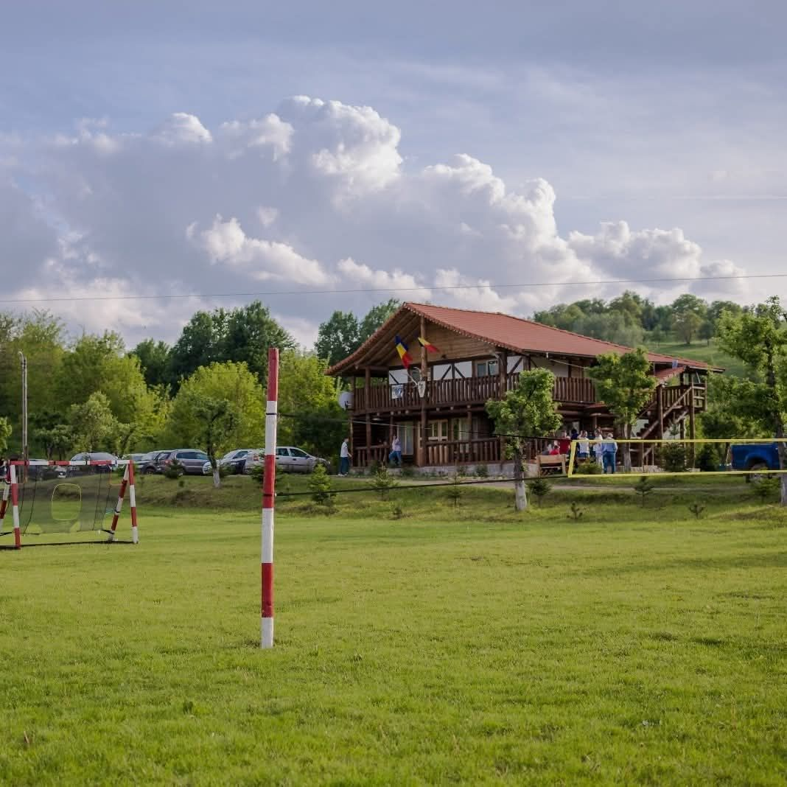
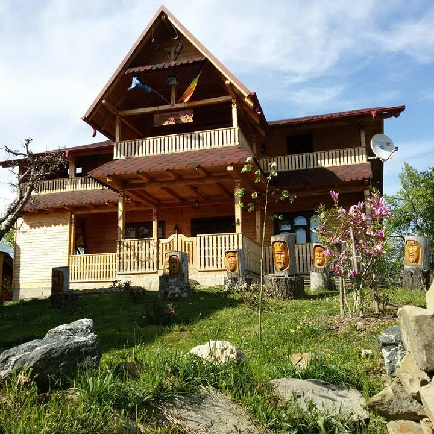
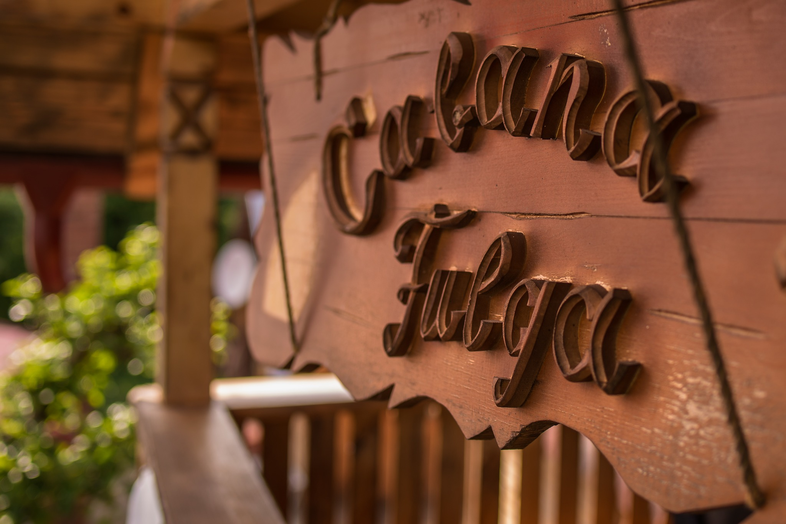
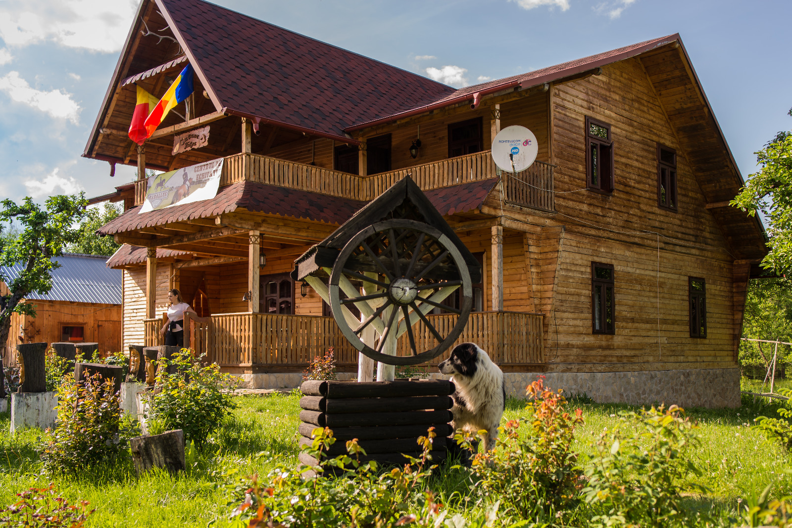
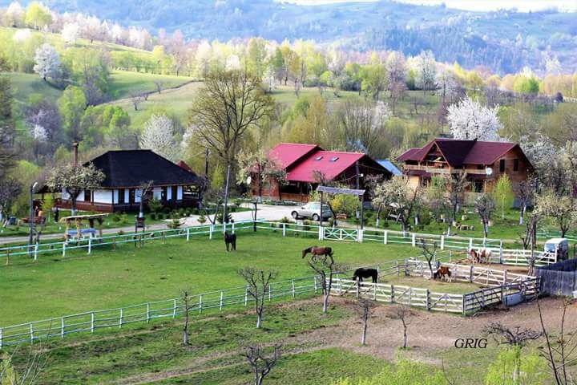
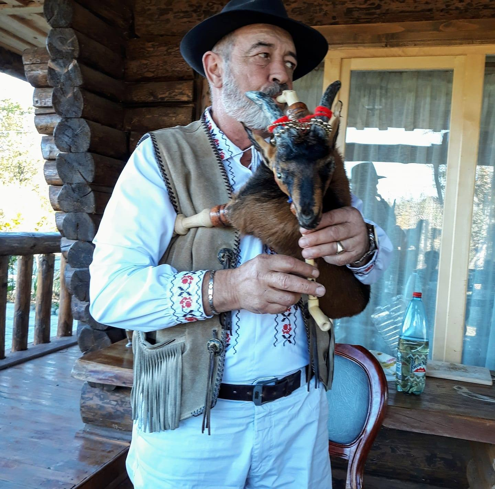
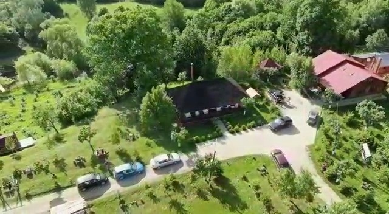
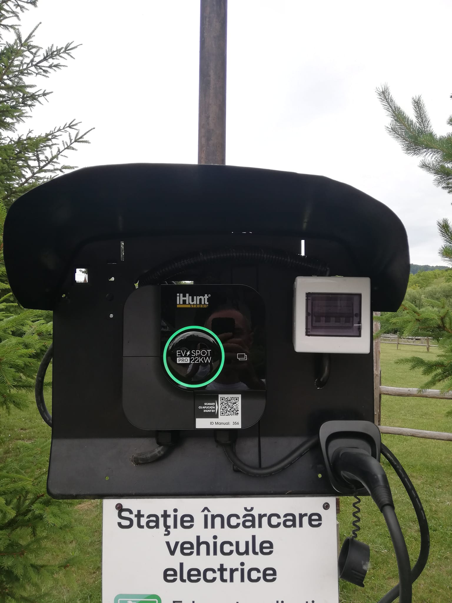

Tradiție și natură, în cabane numai ale voastre.
La Cabana Fulga vă așteaptă trei cabane din lemn în inima naturii vrâncene, o tiroliană de peste 400 de metri, cai și un centru de echitație, precum și un loc de joacă spațios pentru copii. Un loc de evadare pentru familie și prieteni, între dealuri și livezi.
Pasionați de tradiție și modernism deopotrivă.
Cabana Fulga se află la Podu Nărujei, în punctul „Măgurele”, com. Năruja, jud. Vrancea — un colț de natură între dealuri, livezi și liniștea văii Nărujei. Pasionați de tradiție și modernism deopotrivă, ne-am gândit să oferim oaspeților o evadare autentică, departe de agitația orașului.
Vă întâmpinăm cu trei unități de cazare: două cabane cu câte 4 camere (Fulga 1 și Fulga 3) și o cabană cu 6 camere (Fulga 2). Fiecare cabană dispune de bucătărie proprie, utilată complet, living și foișor cu grătar, iar unele camere au paturi suplimentare pentru copii. Cabanele se închiriază integral, așa că petrecerea este numai a grupului vostru.
Vă rugăm să rețineți: locația noastră nu dispune de restaurant sau magazin, așa că vă recomandăm să veniți cu proviziile dorite. În rest, aveți tot ce vă trebuie pentru un sejur de neuitat.


Adrenalină, cai și zile în aer liber.
De la tiroliana de peste 400 de metri și plimbările călare, la locul de joacă pentru copii și foișoarele cu grătar — la Cabana Fulga aveți motive să stați afară, în natură, toată ziua.
Tiroliană de peste 400 m
O tiroliană impresionantă, de peste 400 de metri lungime, construită pe segmente — adrenalină la maximum, deasupra naturii vrâncene.
Centru de echitație
Un centru de echitație cu cai, plimbări călare și tururi de manej. La cerere, aveți și plimbări cu sania sau cu trăsura trasă de cai.
Loc de joacă pentru copii
Un loc de joacă generos, de circa 500 mp, unde cei mici se pot bucura din plin de aer liber cât voi vă relaxați în siguranță.
Foișoare cu grătar
Fiecare cabană are foișorul ei cu grătar și un living spațios — locul perfect pentru grătar în familie, cu prietenii, sub cerul liber.
Mini spa cu ciubere
La cerere, vă putem pregăti mini-spa-ul cu ciubere calde și saună uscată — o clipă de răsfăț după o zi petrecută în aer liber.
Natură și spații verzi
Teren de fotbal, spații verzi și livezi de jur împrejur — între dealurile Vrancei, cu liniște și aer curat, departe de agitație.
Trei cabane din lemn, închiriate integral.
Fiecare cabană se predă la cheie, cu bucătărie proprie utilată complet, living și foișor cu grătar. Unele camere au paturi suplimentare pentru copii. Rezervarea se face pentru minimum 2 nopți.
Cabana Fulga 1
Cabană din lemn cu 4 camere, bucătărie proprie utilată complet, living și foișor cu grătar — închiriată integral pentru grupul vostru.

6 camereCabana Fulga 2
Cea mai încăpătoare dintre cabane, cu 6 camere — potrivită pentru grupuri mari, cu bucătărie utilată, living și foișor cu grătar.
Cabana Fulga 3
Cabană din lemn cu 4 camere și tot confortul: bucătărie proprie utilată complet, living și foișor cu grătar, între livezi și dealuri.
Cabana Fulga, în imagini reale.
De la cabanele din lemn și padocul cu cai, la firma sculptată și tradiția vie a locului — câteva imagini de la noi, din Podu Nărujei.




Un loc de suflet, spus de turiști.
Impresii lăsate de oaspeții care ne-au trecut pragul la Cabana Fulga, în Podu Nărujei.
Cei care vin aici sunt încântați și mulțumiți, bucurându-se pe tiroliană, de cai, cât și de frumusețea zonei.
Un loc de evadare autentică, în mijlocul naturii, cu familia și prietenii — cabane primitoare, tiroliană, cai și liniștea dealurilor Vrancei.
Ne găsiți în Podu Nărujei.
La punctul „Măgurele”, în com. Năruja, jud. Vrancea — între dealurile și livezile văii Nărujei, în inima naturii vrâncene.
Adresă
Sat Podu Nărujei, punctul „Măgurele”
Com. Năruja · jud. Vrancea · cod 627221
Rezervări la telefon
Sună-ne pentru disponibilitate și tarife — cabanele se închiriază integral.
Sejururi
- Rezervare minimă 2 nopți
- Cabana închiriată integral
- Restaurant / magazin nu există — vino cu provizii
Natura Vrancei vă așteaptă. Veniți cu ai voștri.
Rezervați un sejur la Cabana Fulga și bucurați-vă de tiroliană, de cai și de liniștea dealurilor din Podu Nărujei — cabana, numai a voastră.